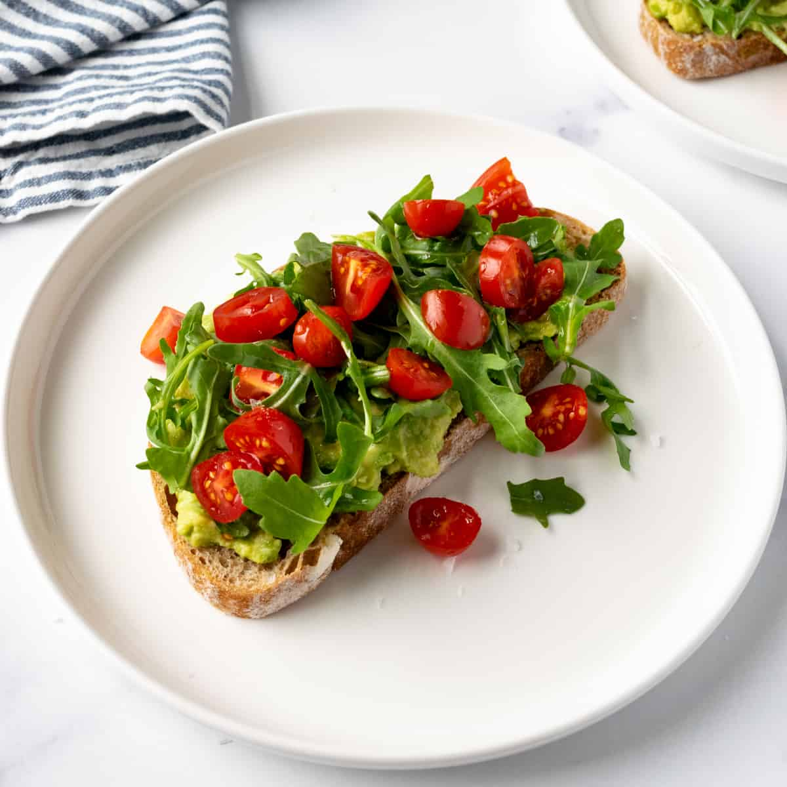

Avocado Toast

Description
While some may think it'll break the bank, having avocado toast before your start your day is an excellent source of nutrients that will get you ready no matter what kind of lifestyle you're living. Fresh ingredients make this simple breakfast energizing and uplifting.
Ingredients
- 1 avocado
- Your choice of bread
- 1 diced roma tomato OR 3-4 chopped cherry tomatoes
- 1 handful of arugula
- Salt, pepper, and balsamic vinegar to taste
Steps
- Toast your bread
- Drizzle balsamic vinegar to prep your bread
- Spread avocado over toast until it's smooth and creamy
- Add a touch of salt and pepper to the spread avocado
- Add a good handful of arugula on top
- Spread your diced or chopped tomatoes over the arugula bed
- One final drizzle of balsamic vinegar with salt and pepper on top to taste.